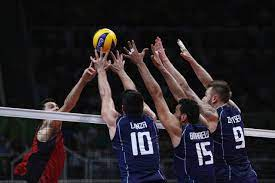
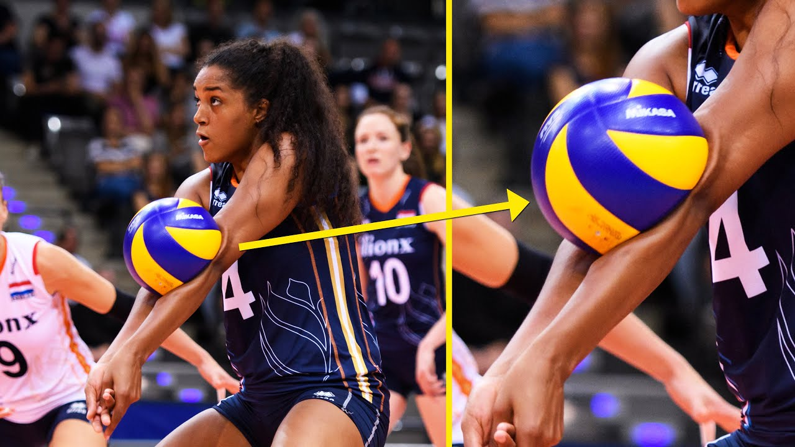
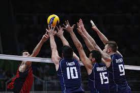
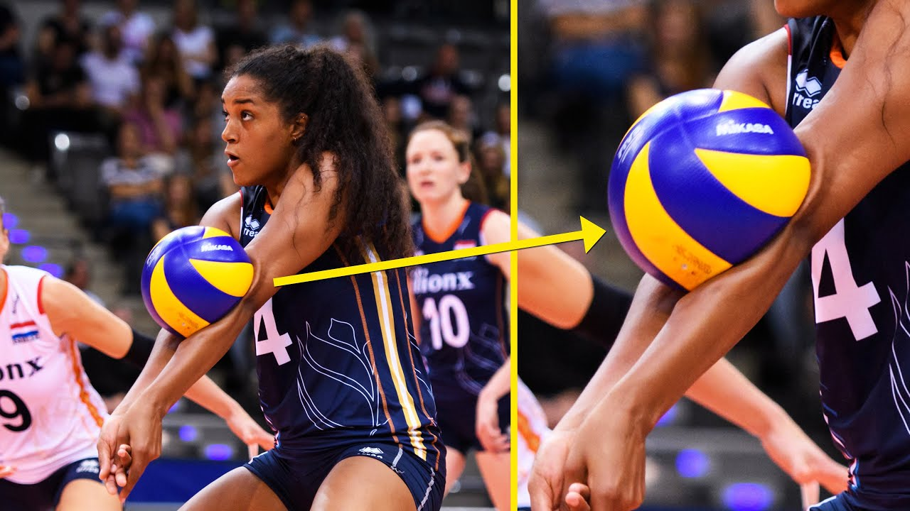

- volleyball info
- volleyball table
- volleyball vidio
BOVANDAKUTYUN
Volleyball is a team sport in which two teams of six players are separated by a net. Each team tries to score points by grounding a ball on the other team's court under organized rules.[1] It has been a part of the official program of the Summer Olympic Games since Tokyo 1964. Beach volleyball was introduced to the programme at the Atlanta 1996 Summer Olympics. The adapted version of volleyball at the Summer Paralympic Games is sitting volleyball
 



The complete set of rules is extensive,[2] but play essentially proceeds as follows: a player on one of the teams begins a 'rally' by serving the ball (tossing or releasing it and then hitting it with a hand or arm), from behind the back boundary line of the court, over the net, and into the receiving team's court.[3] The receiving team must not let the ball be grounded within their court . The team may touch the ball up to three times to return the ball to the other side of the court, but individual players may not touch the ball twice consecutively.[3] Typically, the first two touches are used to set up for an attack. An attack is an attempt to direct the ball back over the net in such a way that the team receiving the ball is unable to pass the ball and continue the rally, thus, losing the point . The team that wins the rally is awarded a point and serves the ball to start the next rally. A few of the most common faults include
| Rank | Nation | Gold | Silver | Bronze | totae |
| 1 | Sovat thien | 6 | 2 | 3 | 11 |
| 2 | Italy | 4 | 1 | 0 | 5 |
| 3 | Brazil | 3 | 3 | 1 | 7 |
| 4 | Poland | 3 | 2 | 0 | 5 |
| 5 | Crech | 2 | 4 | 0 | 6 |